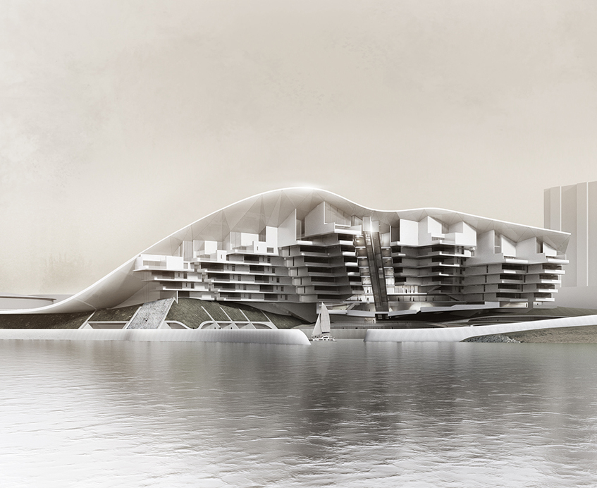
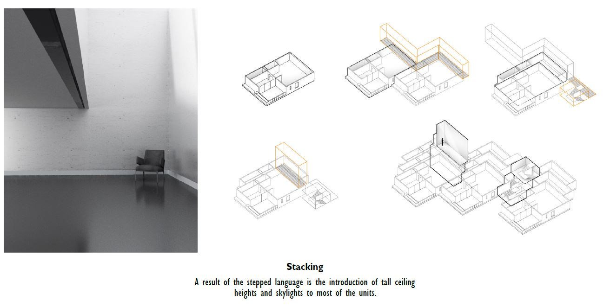
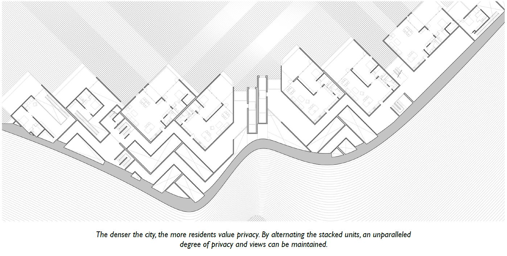
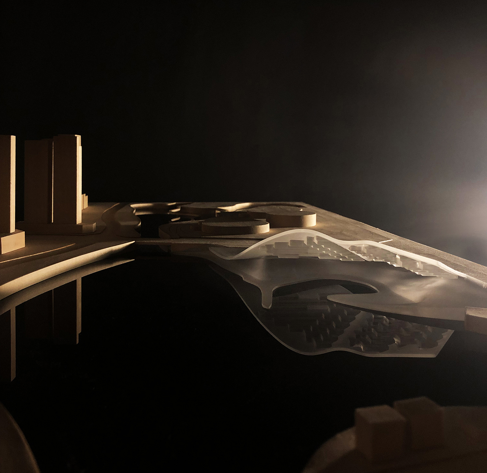
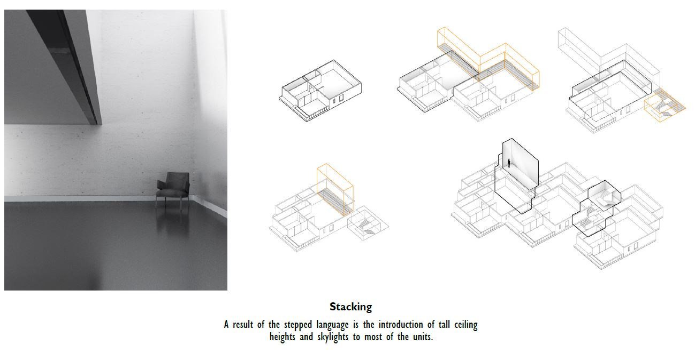
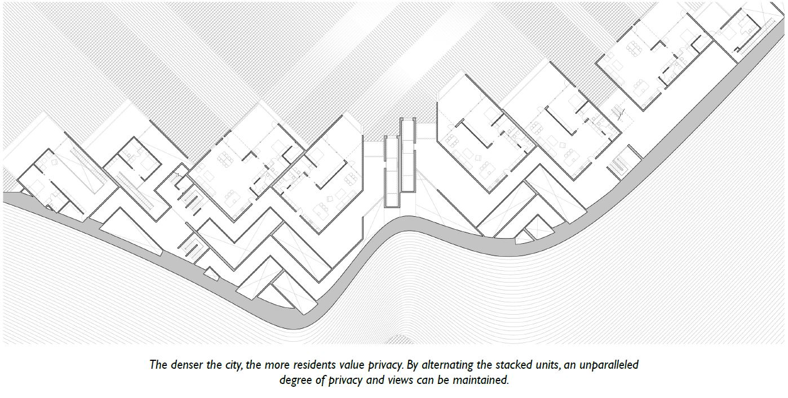
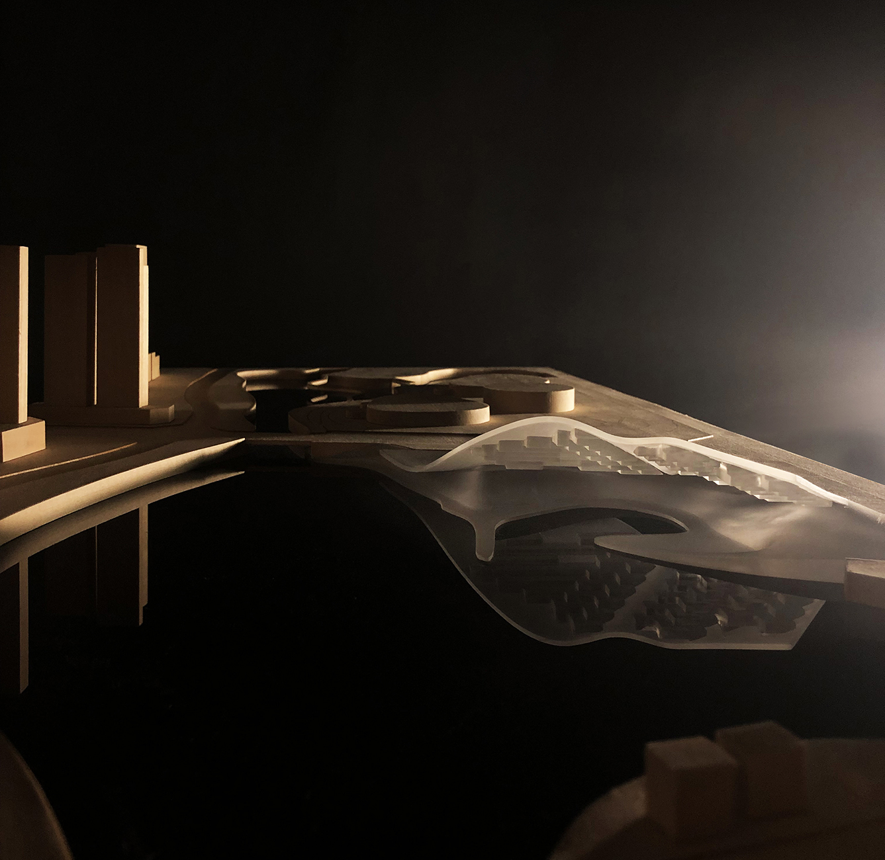

Apartments
Individual Design Competition
Korla City Apartments
2018
Located at the foot of the Tian Shan mountains and situated around
the Kaidu River, Korla is a city wholly unique among the region. As
the gatekeeper to the pass that connects two vast desert basins, the
city prides itself as a historic venue with hopeful development
prospects for the future.
The city center has recently undergone intense urbanization and
development, including dozens of new residential neighborhoods
within the past decade. The worrying speed of urban sprawl is
tempered by a planned lake district with canals dug from the
historic Kaidu River.
The project intends to reunify what once was an expansive grassy
plain with the necessary urban densification.
 




